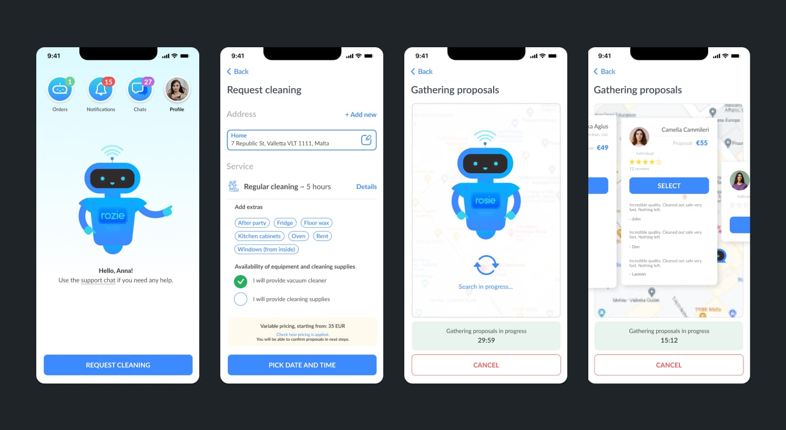
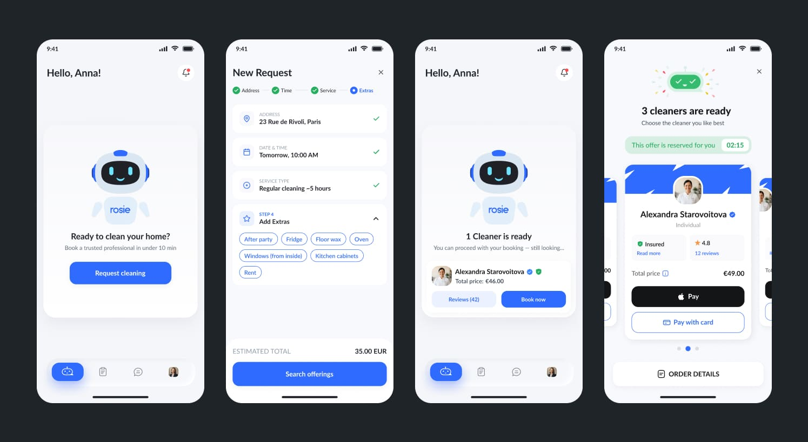
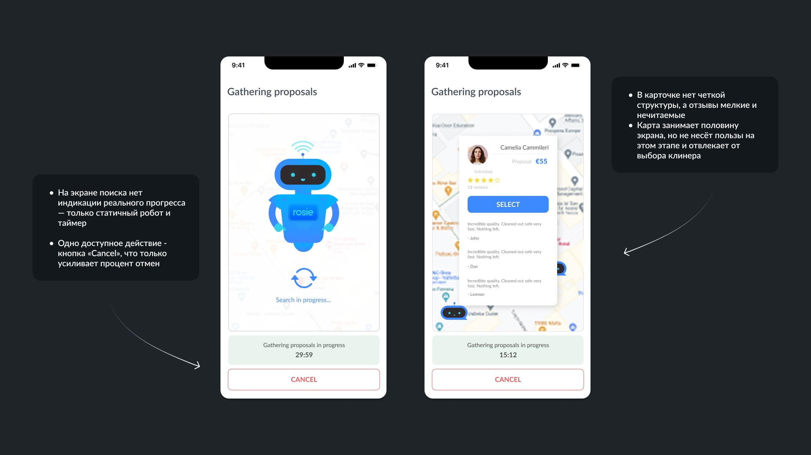
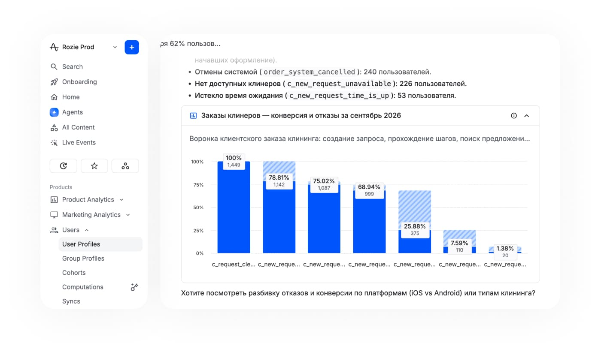
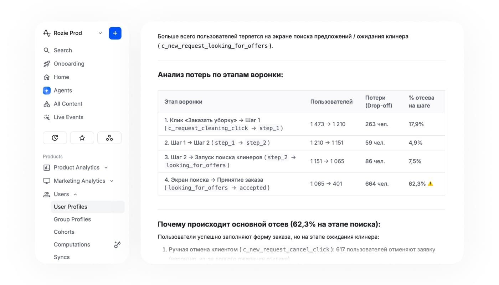
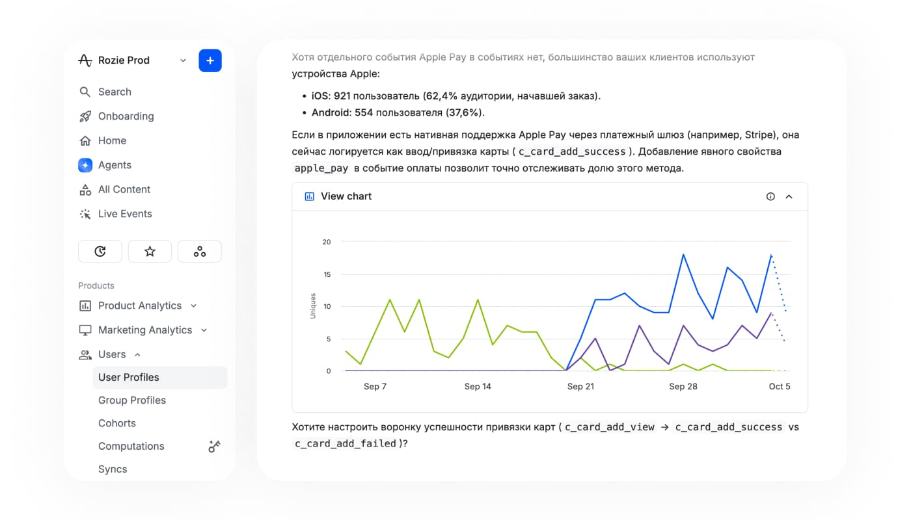

Rozie
Как я провёл аудит воронки в Amplitude, выявил критическую точку потери пользователей на этапе поиска клинера и спроектировал новое видение сценария для повышения конверсии в заказ.

Приложение для бронирования клининга
Что это
Rozie — приложение для бронирования клининговых услуг. Сервис соединяет клиентов с проверенными уборщиками.
Как работает
Заказчик создаёт заявку, исполнители присылают свои предложения, после чего клиент выбирает подходящего и оплачивает услугу.
Ценность для бизнеса
Чем проще клиенту оформить заказ и дождаться клинера, тем выше комиссионный доход приложения. Задача — удержать пользователя до успешной оплаты.
Низкая конверсия в заказ
Я подключился к проекту на этапе, когда приложение уже работало, но показывало низкую конверсию при оформлении заказа. Мне нужно было разобраться в причинах и предложить решения.
Бизнес-цель
Снизить потери пользователей на этапе оформления заказа и увеличить долю успешных бронирований.
До / После


Потяните, чтобы сравнить
Анализ текущего дизайна
Критично
- На экране поиска нет индикации реального прогресса — только статичный робот и таймер. Из доступных действий есть только кнопка «Cancel», что не оставляет пользователю выбора, кроме как отменить заявку при малейшем сомнении.
Важно
- Карточка предложения не даёт нужной информации для выбора: в ней нет четкой структуры, а отзывы мелкие и нечитаемые. Карта занимает половину экрана, но не несёт пользы на этом этапе и отвлекает от выбора клинера.

Работа с данными в Amplitude
Работая с сервисом аналитики Amplitude, я проанализировал воронку заказов и обнаружил критическую точку.

Таблица воронки из Amplitude
Шаги заполнения формы проходят ровно (потери 4,9% и 7,5%), но на этапе «Экран поиска → Принятие заказа» происходит резкое падение конверсии: 62,3% пользователей покидают сценарий. Из 1065 пользователей до оплаты доходят только 401.
пользователей уходят на экране поиска клинера, не дойдя до оплаты
Почему пользователи уходят?

Разбивка отмен из Amplitude
Это причины отмен за весь сентябрь по всей воронке — более широкий срез, чем 664 потери на шаге поиска. Главные из них:
Ручная отмена
Клиент отменяет сам — скорее всего, из-за долгого ожидания.
Нет клинеров
Доступных исполнителей не нашлось в нужное время и локации.
Таймаут
Истекло время ожидания ответа от клинеров.
Дополнительный инсайт
Я также выяснил, что 62,4% аудитории используют iOS, но нативной поддержки Apple Pay в приложении нет. Это создаёт дополнительный барьер при оплате.

Распределение по платформам и платёжным методам
Формулировка проблемы
Пользователи успешно заполняют форму заказа, но прерывают сценарий на экране ожидания. Интерфейс не удерживает внимание, не объясняет статус поиска, а отсутствие быстрых платёжных методов снижает конверсию.
Фокус на прогрессе пользователя
я хочу заказать уборку
быстро получить предложения от клинеров и быть уверенным, что мой заказ не потеряется
не тратить время на ожидание впустую и получить услугу
Три дизайн-гипотезы
На основе данных из Amplitude я сформулировал три дизайн-гипотезы:
Индикация и таймер
Если добавить понятную индикацию процесса поиска и таймер, пользователи будут реже отменять заявку вручную.
Альтернативы на экране
Если предложить изменить время или локацию прямо на экране ожидания, мы снизим потери из-за недоступности клинеров.
Apple Pay
Если внедрить Apple Pay, мы уберём барьер для 62% пользователей на этапе оплаты.
Варианты решений
Вариант 1 — Улучшение экрана ожидания
Добавил понятную анимацию поиска, таймер и возможность редактировать заявку без полной отмены.
Вариант 2 — Умный экран поиска (Smart Search)
Если система видит, что доступных клинеров нет, она сразу предлагает изменить время или локацию, а не просто показывает ошибку.
Концепт нового видения
Дополнительно разработал концепт, как экран заказа может выглядеть в идеале — с акцентом на доверие, прозрачность цен и бесшовную оплату, включая Apple Pay.
Точки роста
По результатам обсуждения с продуктом и разработкой выбрали приоритетные направления для внедрения.
Финальные метрики после релиза не были зафиксированы в рамках моей зоны ответственности на тот момент, но мы чётко выявили точки роста и спроектировали решения:
- Снижение количества ручных отмен за счёт улучшения экрана ожидания.
- Снижение потерь из-за недоступности клинеров за счёт умных подсказок.
- Потенциальный рост конверсии оплаты за счёт внедрения Apple Pay (таргет на 62% аудитории).
Все состояния интерфейса
Проработал не только основной сценарий, но и смежные экраны и состояния: пустые состояния, ошибки (unavailable), подтверждение заказа.